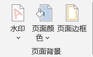
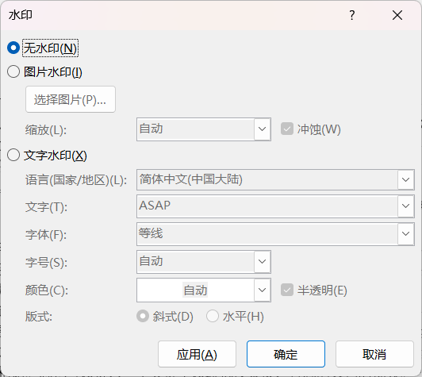
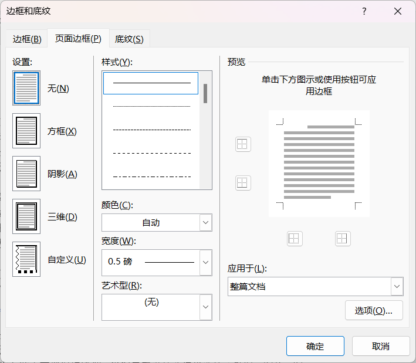

设计
Designer
- 内容 Contents
-
主题文档格式颜色字体页面背景
- 方法 Methods
- 示范 + 实操
主题
- . 创作word时 首先 要做的事情：全局设计
- . 统一为文档指定基调：主题、字体、颜色、背景等，避免经常性、重复性设置
- . 创作过程可以随时实现"一键换肤"
- . 所有的操作都是全局性的
- . 统一为文档设置主题
- . 每个主题都有名字
- . 等级考试的最爱
文档格式
- . 系统预置的的很多格式
- . 鼠标放上去可以查看每个格式的名字，如基本（时尚）
- . 等级考试的最爱
- 颜色
- . 提供不同的调色卡
- . 一键换肤，特别是指定了主题的情况下
- 字体
- . 可以分别指定中文和西文的标题和正文字体
页面背景
-
 页面背景 - 水印
- . 可以设置文字或图片水印
-
 水印 - 页面颜色
- . 页面的背景颜色
- 页面边框
- . 高频操作
- . 同普通元素的边框和底纹共用一个设置对话框
-
 页面边框